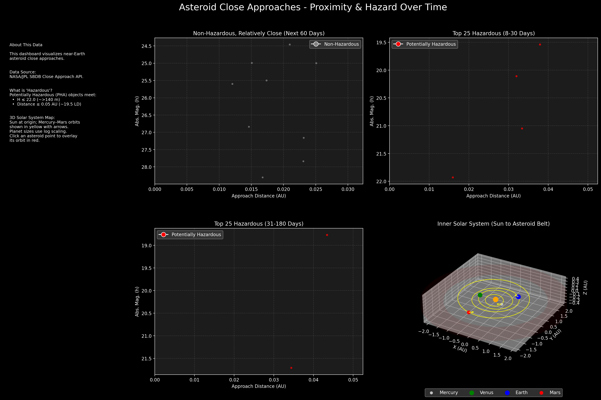

This is a project to monitor and visualize near-Earth asteroid close approaches using data from the NASA/JPL SBDB Close Approach API.
Latest Dashboard (Generated Nov 6, 2025)
The image below is the static dashboard generated by the Python script. The 3D map is interactive when the script is run locally, allowing you to click on an asteroid to plot its orbit.
To run the interactive version yourself, you can view or download the code:
View the Python Code